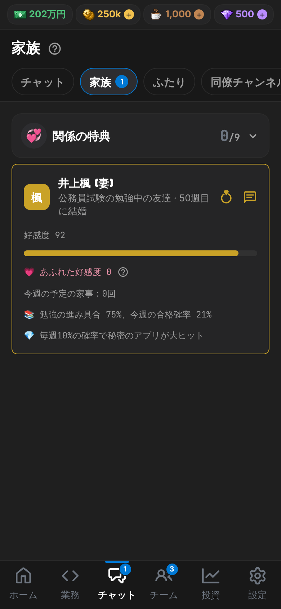
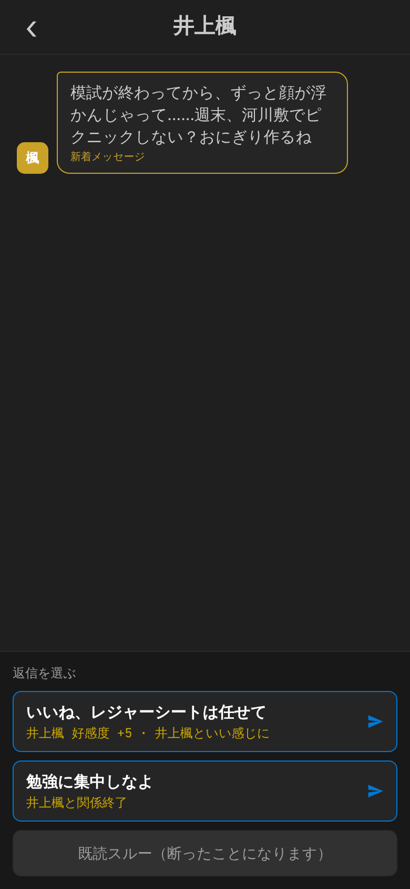

井上楓 攻略
称号あしながおじさん専用のヒロイン、楓。勉強の進み具合、合格確率、2つの結婚エンディングの選び方
公務員試験の勉強中の友達。いつもお金に困っていても、くじけません。
- 称号あしながおじさんを付けた周回にだけ登場します。
- お金をあげると勉強の進み具合だけが上がり、好感度はそのままです。好感度はそばにいてあげる返信だけで。
- 結婚エンディングが2つ: 支援しないで早く結婚するとねえ、私成功したよ、支援を最大 + 結婚を遅らせると合格通知と結婚指輪。
- プロポーズに333万円が必要です。プロポーズの時点で口座になければ終わり！ 💸
楓は称号ストーリーと結びついた特別なヒロインです。食費、オンライン講座代、家賃を助けてあげると試験勉強が進み、その進み具合がエンディングを分けます。そして彼女には誰も知らない秘密が1つあります… 🤫 共通ルールはこちら。
出会う条件#
| 項目 | 条件 |
|---|---|
| 称号 | あしながおじさんを装着（平凡な開発者、万年係長、帰農デベロッパーのエンディングのどれかを見ると開きます） |
| 会社 | 関係なし |
| 最初の好感度 | 20（7人の中でいちばん高い） |
| 片想い前の好感度 | ほかのヒロインより早く上がる |
| 称号のマイルストーン | 河川敷デート → 恋人になる → 結婚 → 楓の秘密 |
好感度の上げ方: お金のメッセージ vs 心のメッセージ#
楓の好感度は心のメッセージでそばにいてあげる返信だけで上がります。お金を送る返信は勉強の進み具合だけを上げ、好感度はそのままです。この2つを取り違えないことが楓の攻略のすべてです。
- 💸 お金のメッセージ: お金を送ると勉強の進み具合だけが上がります（家賃と生活費16.7万円が +10でいちばん大きい）。断ってもペナルティはありません。
- 💗 いい返信: 心のメッセージで仕事を後回しにしてそばにいてあげる1番目の返信。+3ですが、体力、ストレス、成果を少し使います。
- 💔 悪い返信: 心のメッセージを断る返信。-8です（そのかわり成果、コーディング力などが少し上がります）。
彼女が合格するか秘密が明らかになると、お金、心のメッセージと日常のセリフは止まります。
楓も週に1通なので、お金のメッセージが来た週は好感度のメッセージが来ません。お金のメッセージを断ってもペナルティは0なので、支援しないルートならためらわず断りましょう。ただし既読スルーは -15です（返信は必ず！）。
勉強の進み具合と合格確率#
進み具合はどれだけお金を使っても一定の上限を超えられません。自分だけでも毎週 +0.5ずつ上がります。
| 週 | 10 | 30 | 50 | 60 | 65 | 70 | 80 |
|---|---|---|---|---|---|---|---|
| 進み具合の上限 | 11.7 | 35 | 58.3 | 70 | 77.5 | 85 | 100 |
| 進み具合 | 70% | 75% | 80% | 85% | 90% | 95% | 100% |
|---|---|---|---|---|---|---|---|
| 毎週の合格確率 | 5% | 20.8% | 36.7% | 52.5% | 68.3% | 84.2% | 100% |
家族タブに📚 勉強の進み具合 ○%、今週の合格確率 ○%とすぐ表示されます。

片想い → 告白 → 交際#
- 片想いの誘い（80）週末、河川敷でピクニックしない？おにぎり作るね。 → いいね、レジャーシートは任せて（マイルストーン河川敷デート）
- 告白（100）好きなんだ。付き合ってくれる？ → 俺も好きだよ。もう少し考えさせては -15で、告白は二度と来ません。

結婚の条件#
- プロポーズ（デートの進み具合60 + 好感度100）うん、結婚しようは-333万円。もう少し待とうは -15で、二度と来ません。
お金が足りないと結婚しようを選べず、残る返信は断るだけです。プロポーズが近づいたら（交際を始めてからデート60回）、口座を必ず確認しましょう。周回ボーナス親からの仕送り（最初の残高最大 +200万円）が大きな助けになります。
エンディングすべて#
楓のエンディングは結婚エンディング2つだけで、1周回に2つのうちどちらか1つだけが出ます。交際エンディングと同棲、新婚、好みのエンディングはありません。結婚したあと試験合格と楓の秘密のどちらが先に来るかでエンディングが分かれます。
- 条件
- 楓と結婚 → 試験合格より楓の秘密が先に明らかになる → 第100週に結婚中
- 報酬
- エピックパック1
- 条件
- 楓が試験に合格（進み具合70%から）+ 楓と結婚（プロポーズ333万円）→ 第100週に結婚中
- 報酬
- レジェンドパック1
同棲、新婚、育児#
楓には同棲、新婚、好み、育児がありません（夢の家もなく、赤ちゃんの提案も来ません）。交際エンディングもないので、第100週に付き合っているだけで結婚していなければ、楓のエンディングはありません。
失敗、別れの条件#
| 状況 | 結果 |
|---|---|
| 称号をほかのものに替える | 楓のメッセージが来ない（称号の周回専用） |
| 勉強に集中しなよ（片想いの誘いを断る） | 楓が去る |
| 告白にもう少し / プロポーズにもう少し | -15、二度と来ない |
| プロポーズのときに333万円がない | 断るしか選べない → 結婚できない |
| 結婚後、合格より楓の秘密が先に明らかになる | 合格の結婚エンディングは不可（エンディングはねえ、私成功したよ） |
| そのほかの共通ルール | 美咲の攻略の表 |
よくある質問#
- お金をたくさんあげたら好感度も上がりますか？
- いいえ。お金のメッセージは勉強の進み具合だけを上げます。好感度は模試、自習室、行政法のメッセージのそばにいてあげる返信で上がります。
- 進み具合100%ならすぐ合格ですか？
- その週の判定で100%合格です。ただし進み具合の上限のせいで、第80週より前に100%にはなれません。
- 合格したあとも結婚できますか？
- はい。合格後もプロポーズは来ます（好感度100 + デートの進み具合60）。この順番なら秘密の告白がまったく来ないので、合格の結婚エンディングが確定です。